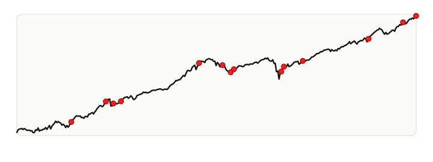

Most recent signal: Jul 10, 2026
SPX 70-Day Streak RSI > 40 + 4% Drawdown
12M avg +12.9% | 12M hit rate 85% | n=14
Forward return profile for S&P 500 when RSI stays above 40 for consecutive days and the index experiences a 4% or greater in-window drawdown